Ogni contributo verifica fonti primarie e indica cosa cambia per il destinatario. Mai marketing, mai pareri travestiti.
La Cassazione ha ribadito un principio a tutela delle persone fragili: la sostituzione dell'amministratore di sostegno non può avvenire senza la partecipazione e l'ascolto del bene…
L'assenza del certificato di agibilità incide sul preliminare di compravendita immobiliare. Il promissario acquirente non è sempre obbligato a stipulare il rogito se l'immobile non…
Il licenziamento per motivi economici non presuppone necessariamente una crisi dell'impresa. Lo ribadisce la Cassazione: bastano ragioni organizzative effettive e verificabili, uni…
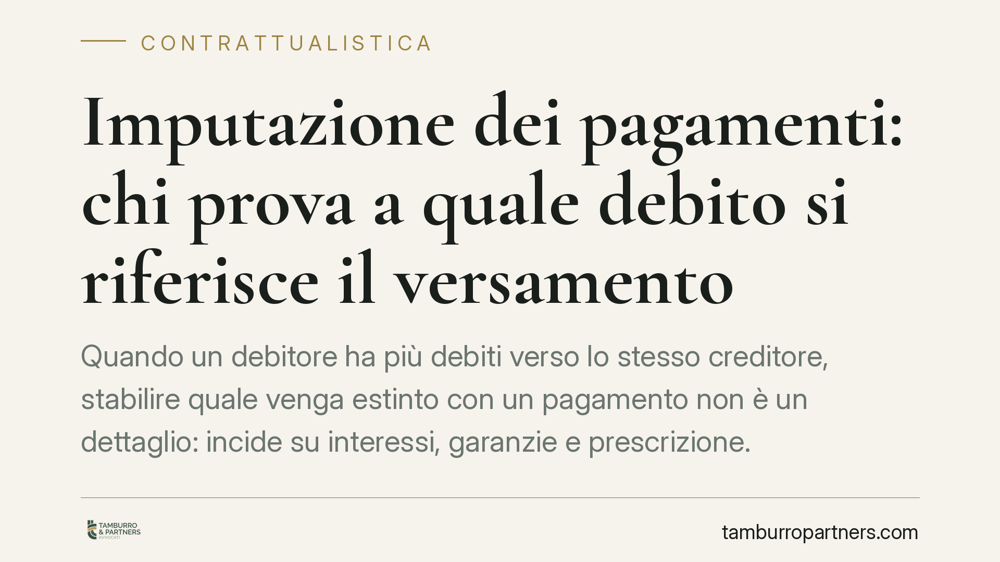
Quando un debitore ha più debiti verso lo stesso creditore, stabilire quale venga estinto con un pagamento non è un dettaglio: incide su interessi, garanzie e prescrizione. La Cass…
Possono i coniugi decidere oggi come regolare patrimonio e rapporti con i figli in caso di futura separazione o divorzio? Il tema è tornato al centro del dibattito. La linea di fon…
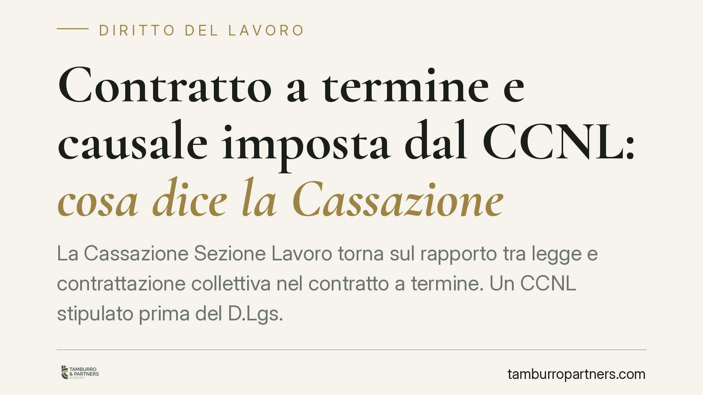
La Cassazione Sezione Lavoro torna sul rapporto tra legge e contrattazione collettiva nel contratto a termine. Un CCNL stipulato prima del D.Lgs. 81/2015 non può reintrodurre l'obb…
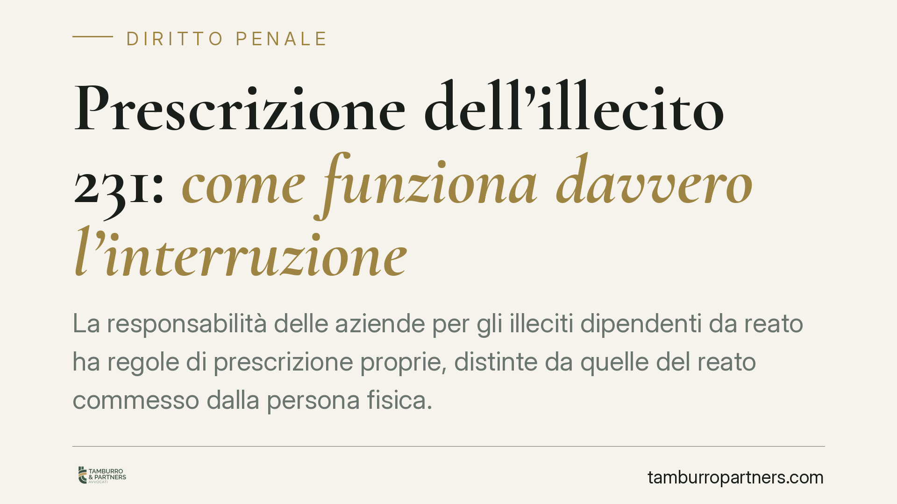
La responsabilità delle aziende per gli illeciti dipendenti da reato ha regole di prescrizione proprie, distinte da quelle del reato commesso dalla persona fisica. Il termine è di …
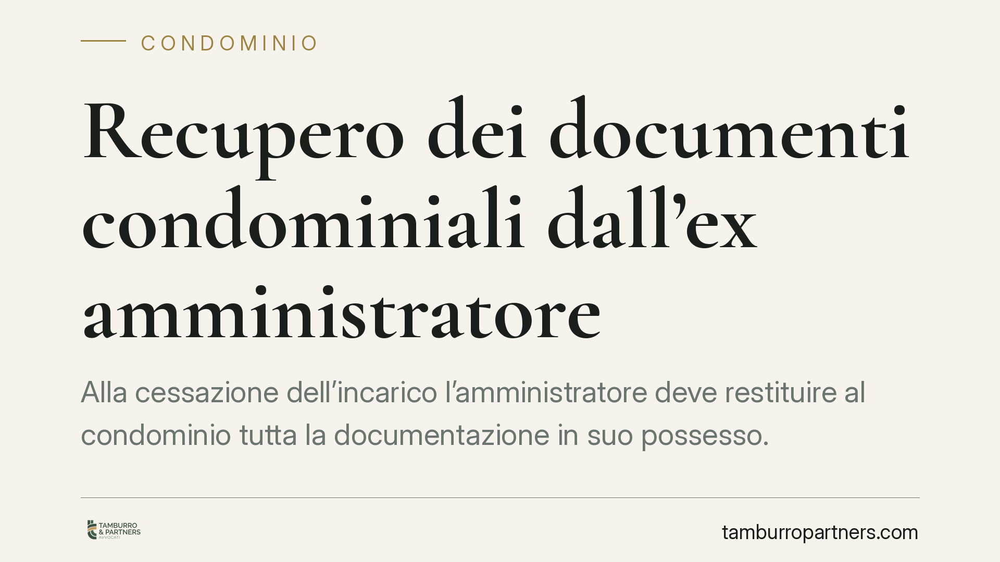
Alla cessazione dell'incarico l'amministratore deve restituire al condominio tutta la documentazione in suo possesso. Quando ciò non avviene, il subentrante e i condomini rischiano…
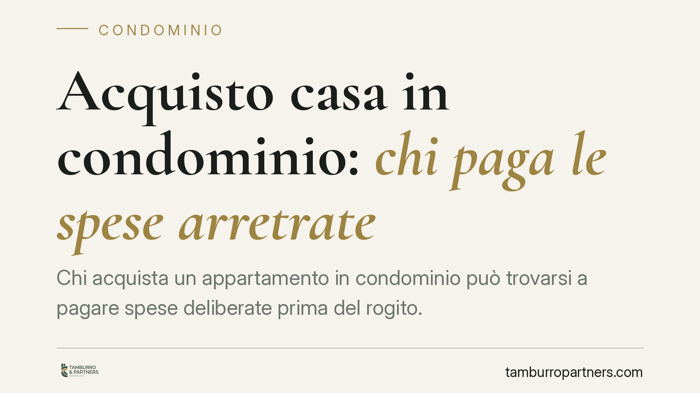
Chi acquista un appartamento in condominio può trovarsi a pagare spese deliberate prima del rogito. La legge prevede una responsabilità solidale con il venditore limitata all'anno …
Nella procreazione medicalmente assistita il consenso dei partner non può essere ritirato in qualsiasi momento. La legge fissa uno spartiacque preciso: la fecondazione dell'ovulo. …
Un acquisto online si perfeziona con un clic, ma non ogni clic vincola il consumatore. Se il pulsante di conferma non segnala in modo chiaro che l'ordine comporta un obbligo di pag…
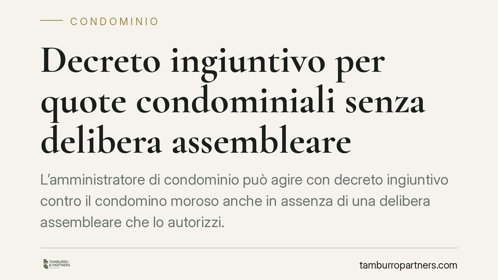
L'amministratore di condominio può agire con decreto ingiuntivo contro il condomino moroso anche in assenza di una delibera assembleare che lo autorizzi. Il fondamento è nel Codice…
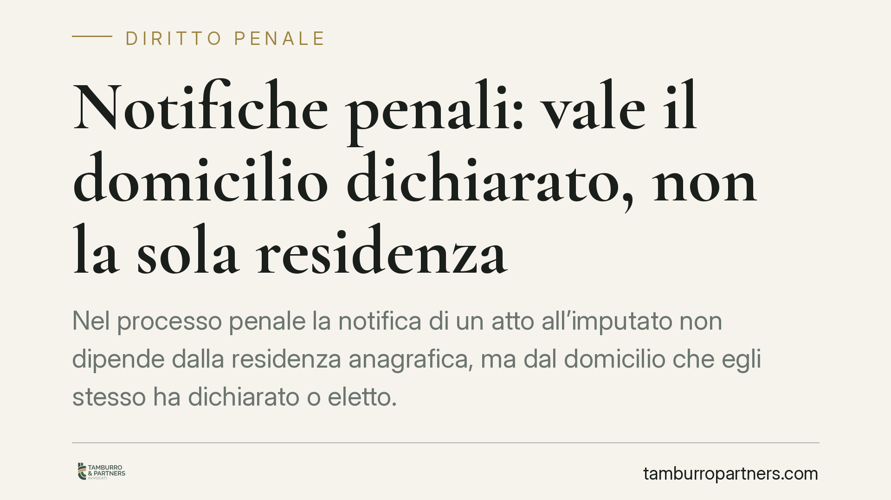
Nel processo penale la notifica di un atto all'imputato non dipende dalla residenza anagrafica, ma dal domicilio che egli stesso ha dichiarato o eletto. Un errore o una dimenticanz…
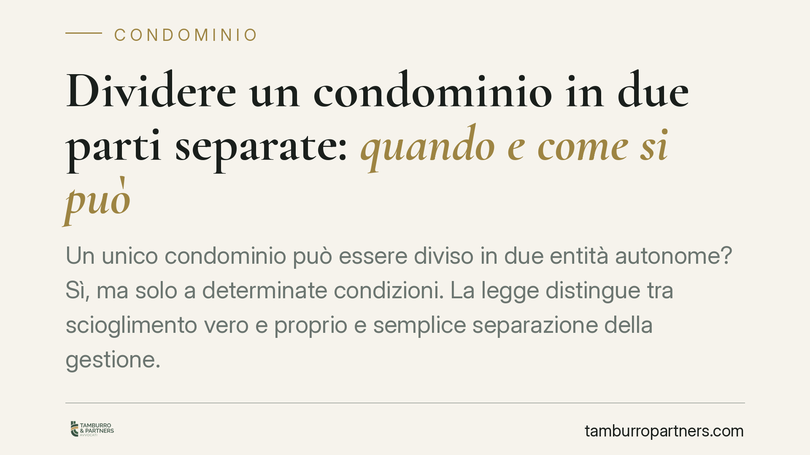
Un unico condominio può essere diviso in due entità autonome? Sì, ma solo a determinate condizioni. La legge distingue tra scioglimento vero e proprio e semplice separazione della …
Nelle cause di separazione la prova testimoniale è spesso decisiva per ottenere l'addebito. Ma un testimone non può affermare che due persone "hanno una relazione": può solo descri…
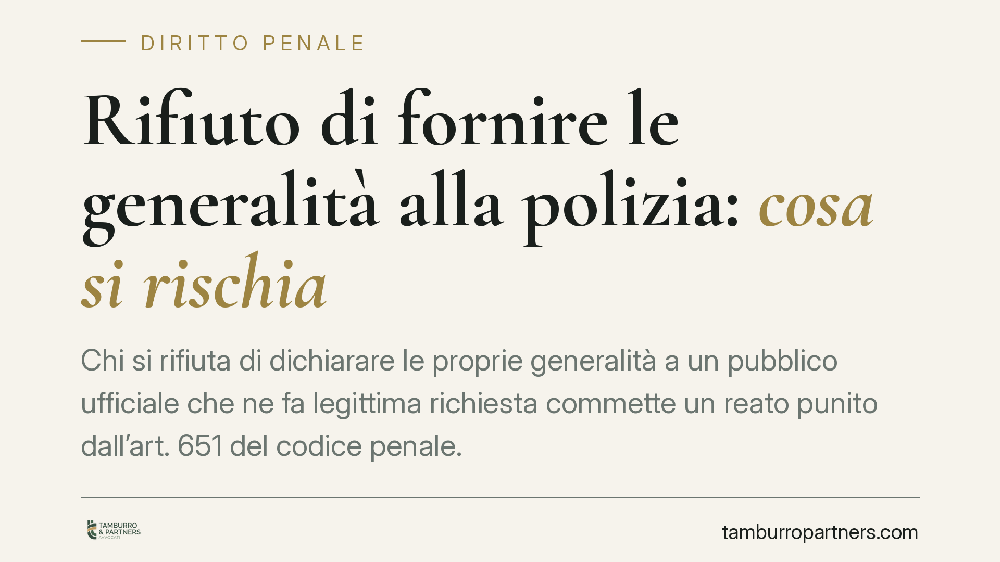
Chi si rifiuta di dichiarare le proprie generalità a un pubblico ufficiale che ne fa legittima richiesta commette un reato punito dall'art. 651 del codice penale. La questione rico…
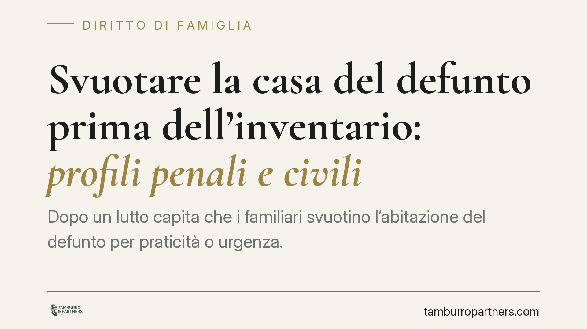
Dopo un lutto capita che i familiari svuotino l'abitazione del defunto per praticità o urgenza. Il gesto, però, non è neutro: se compiuto prima dell'inventario può integrare un rea…
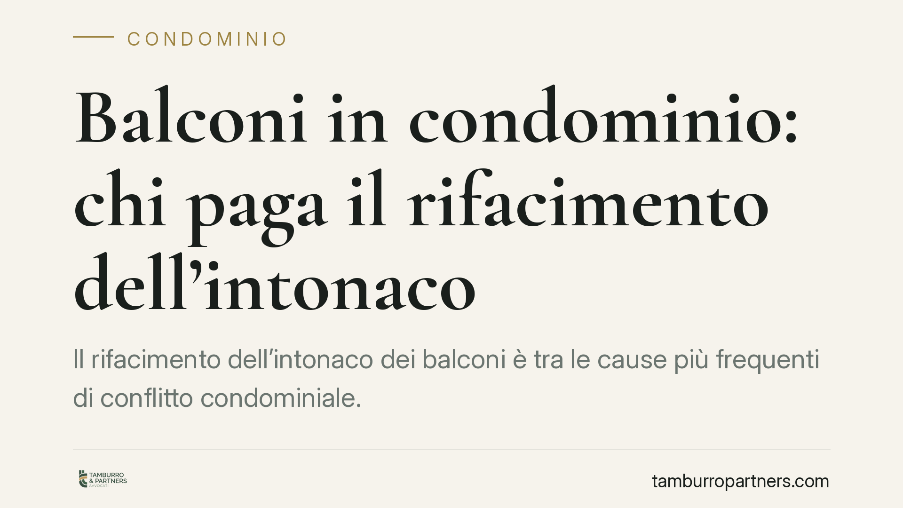
Il rifacimento dell'intonaco dei balconi è tra le cause più frequenti di conflitto condominiale. Una recente pronuncia della Corte d'Appello dell'Aquila distingue con chiarezza tra…
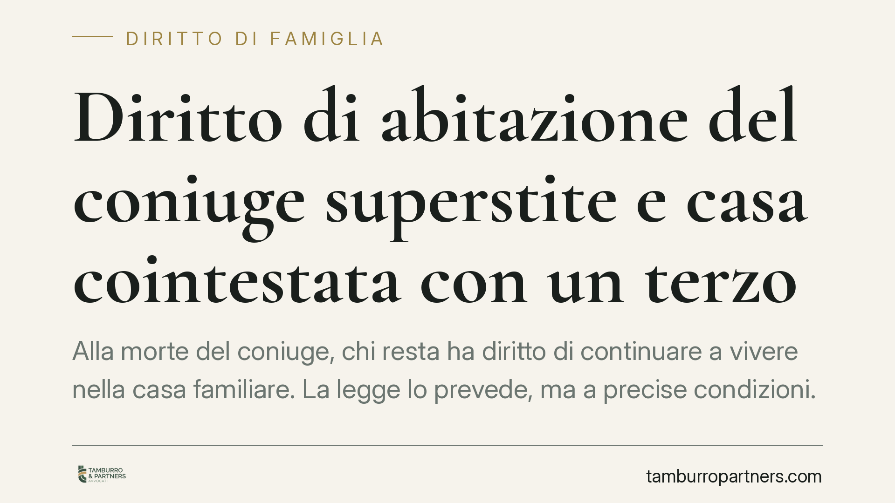
Alla morte del coniuge, chi resta ha diritto di continuare a vivere nella casa familiare. La legge lo prevede, ma a precise condizioni. Se l'immobile è cointestato con un soggetto …
Quando muore un familiare, capita che un erede detenga informazioni su conti, immobili e movimenti bancari e non le condivida con gli altri. L'ordinamento offre strumenti precisi p…
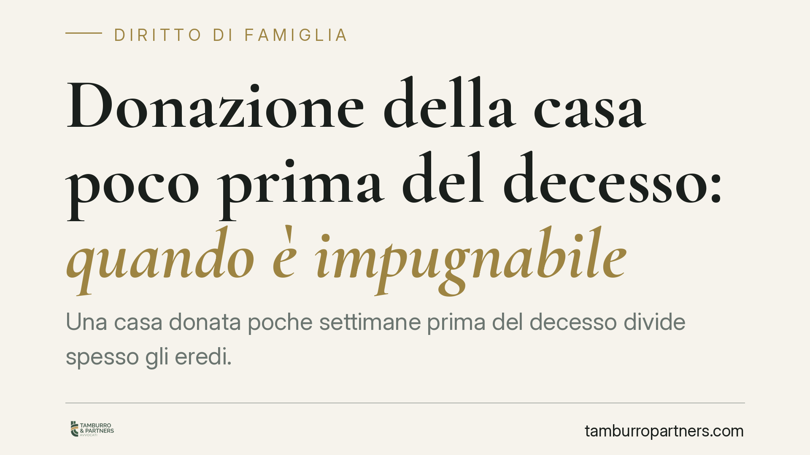
Una casa donata poche settimane prima del decesso divide spesso gli eredi. La donazione resta valida, ma può essere annullata se il donante era incapace di intendere e di volere, o…
Alla morte di un genitore la casa entra nella comunione ereditaria e appartiene a tutti gli eredi. Quando un coerede cambia le serrature ed esclude gli altri, quel comportamento è …
L'assegnazione dei posti auto è tra le questioni condominiali più frequenti e più fraintese. Tracciare righe a terra o attribuire uno stallo a ciascun condomino non modifica la nat…
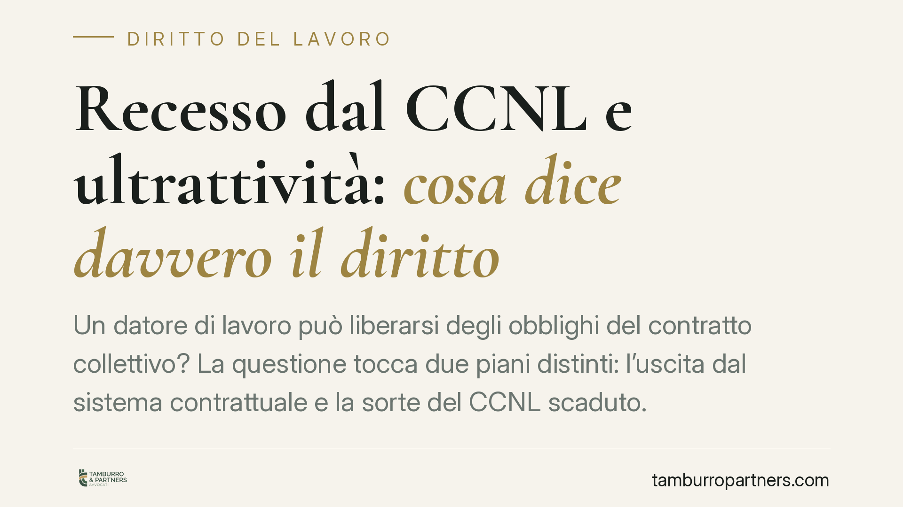
Un datore di lavoro può liberarsi degli obblighi del contratto collettivo? La questione tocca due piani distinti: l'uscita dal sistema contrattuale e la sorte del CCNL scaduto. Il …
Chi viene adibito a mansioni inferiori rispetto a quelle di assunzione può avere diritto al ripristino dell'incarico originario e al risarcimento del danno. La giurisprudenza disti…
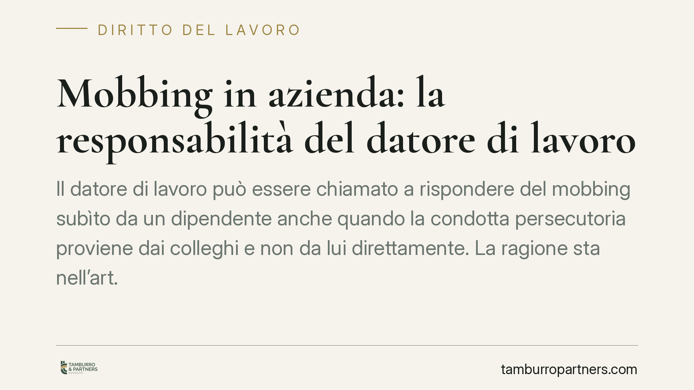
Il datore di lavoro può essere chiamato a rispondere del mobbing subìto da un dipendente anche quando la condotta persecutoria proviene dai colleghi e non da lui direttamente. La r…
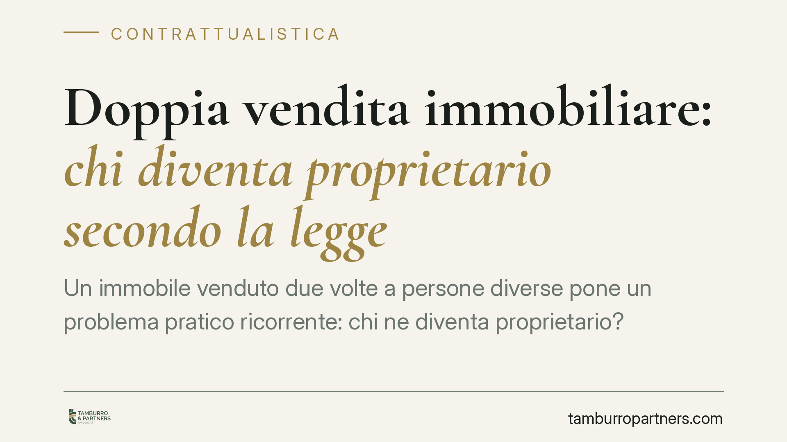
Un immobile venduto due volte a persone diverse pone un problema pratico ricorrente: chi ne diventa proprietario? La risposta non premia chi firma per primo, ma chi trascrive per p…
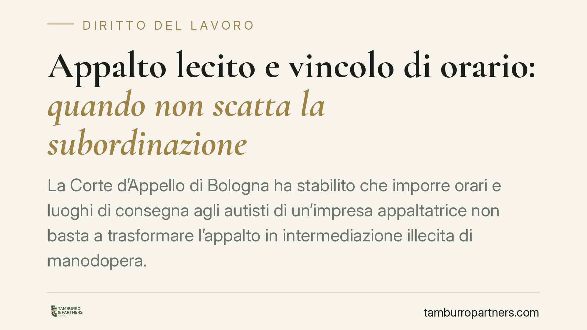
La Corte d'Appello di Bologna ha stabilito che imporre orari e luoghi di consegna agli autisti di un'impresa appaltatrice non basta a trasformare l'appalto in intermediazione illec…
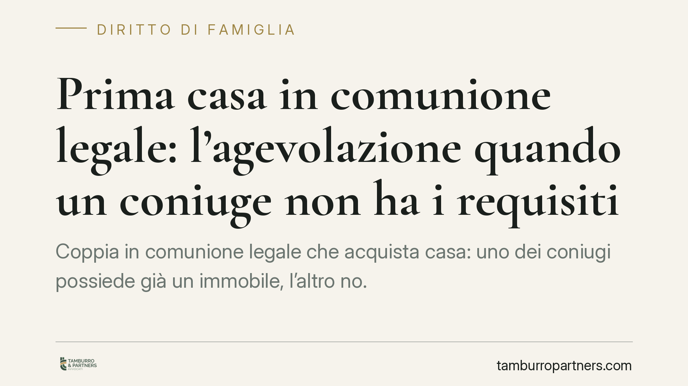
Coppia in comunione legale che acquista casa: uno dei coniugi possiede già un immobile, l'altro no. Spetta comunque l'agevolazione prima casa? La risposta non è scontata: convivono…
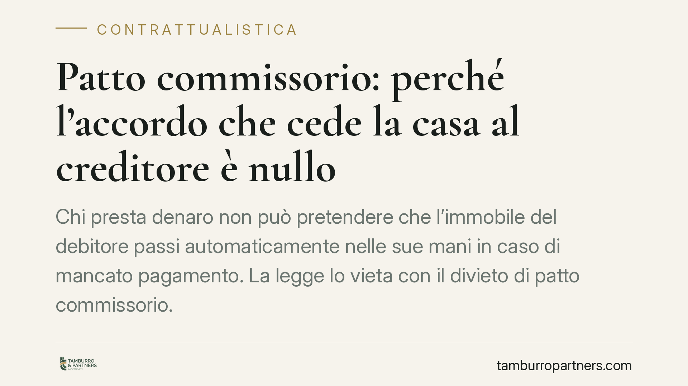
Chi presta denaro non può pretendere che l'immobile del debitore passi automaticamente nelle sue mani in caso di mancato pagamento. La legge lo vieta con il divieto di patto commis…